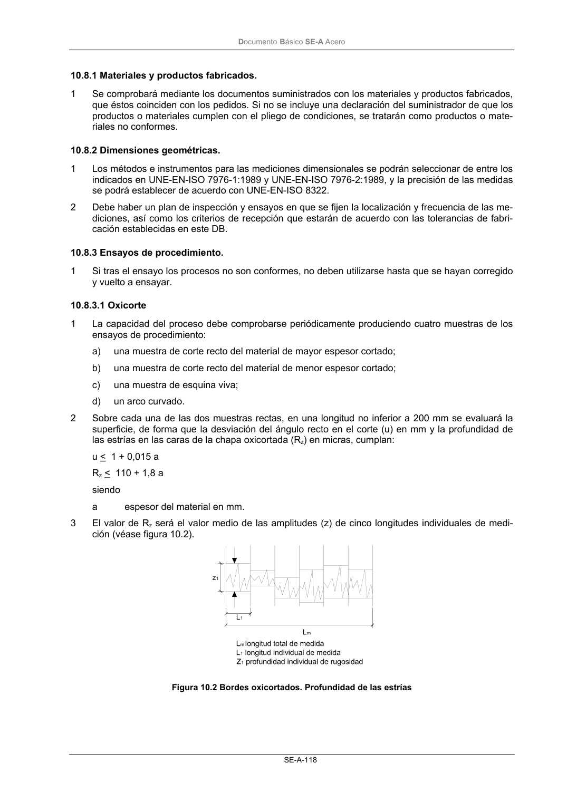

DB-SE-A Acero · edición 2007-10-23 · capa oficial
Documento DB-SE-A-oficial · SHA-256 del PDF 9ed9ea694aabfbda3bfbbef40dfe9223fde05d13c35bc2ba9751e5a96a22a64f
Copia fiel del PDF fuente · Fuente oficial
Ficha de la disposición en la fuente oficial
Formatos: JSON del segmento · Markdown
10.8.3.1 Oxicorte 1 La capacidad del proceso debe comprobarse periódicamente produciendo cuatro muestras de los ensayos de procedimiento: a) una muestra de corte recto del material de mayor espesor cortado; b) una muestra de corte recto del material de menor espesor cortado; c) una muestra de esquina viva; d) un arco curvado. 2 Sobre cada una de las dos muestras rectas, en una longitud no inferior a 200 mm se evaluará la superficie, de forma que la desviación del ángulo recto en el corte (u) en mm y la profundidad de las estrías en las caras de la chapa oxicortada (Rz) en micras, cumplan: u < 1 + 0,015 a Rz < 110 + 1,8 a siendo a espesor del material en mm. 3 El valor de Rz será el valor medio de las amplitudes (z) de cinco longitudes individuales de medi- ción (véase figura 10.2). Figura 10.2 Bordes oxicortados. Profundidad de las estrías DocumentoBásico SE-A Acero SE-A-119
